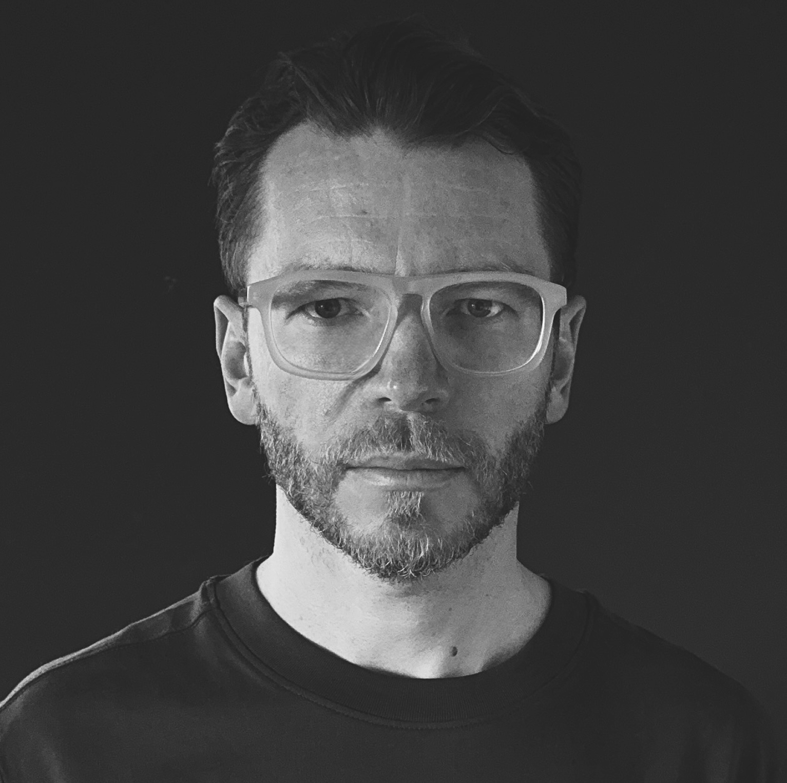
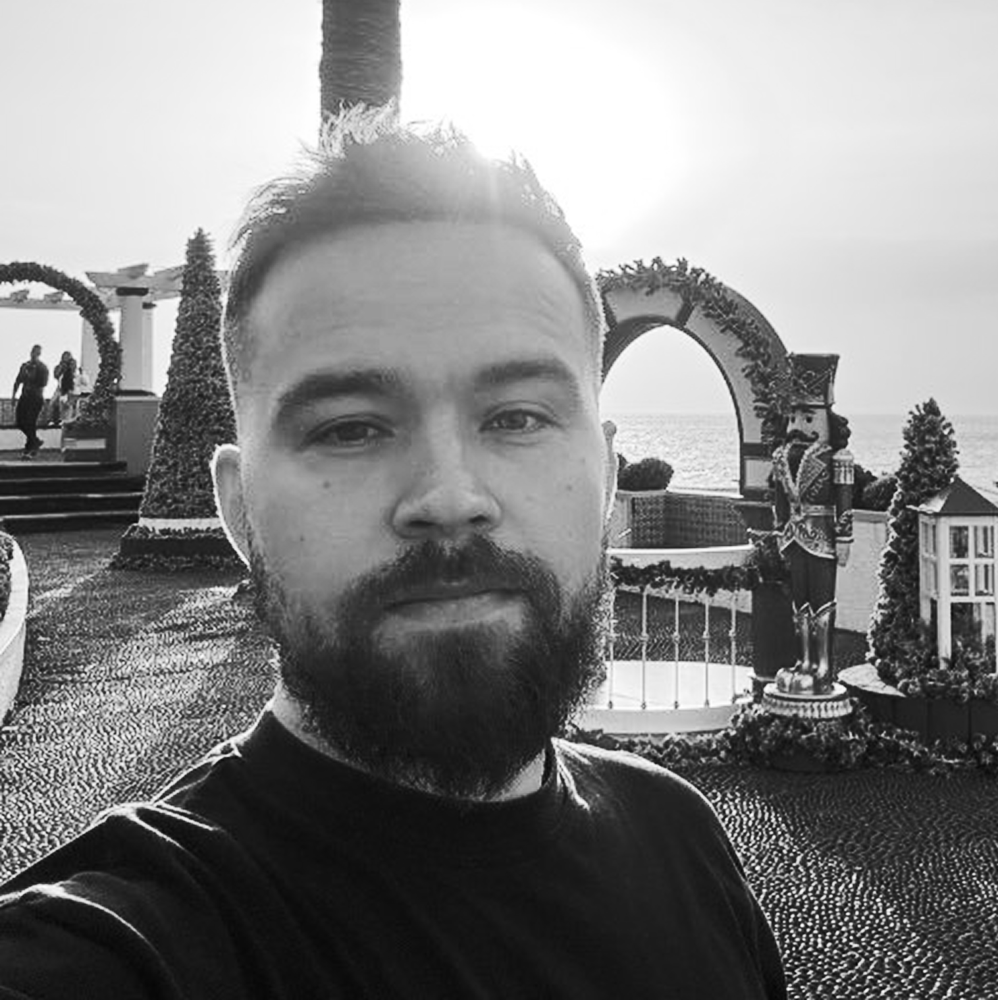

Алгоритмы забирают у людей интеллектуальный и функциональный труд. Те, кто не на своём месте, кто спрятался за неживой ролью — оказываются в пустыне
Мы строим Цитадель — среду, где люди находят новые роли, смыслы и друг друга для совместного созидания
Среда, выстроенная по законам RPG — механика игры подталкивает объединяться в гильдии, создавать смыслы и продукты нового мира
Чтобы войти в Цитадель, нужно пройти квесты и получить бейдж. Каждый квест — это встреча с собой
Каждая сессия сканера — карта человеческой природы: реакции, страхи, паттерны защит. 100 000 таких рейдов создадут движок, который невозможно скопировать
Наш инструмент — рой AI‑агентов, которые работают параллельно. Они симулируют ситуации нестабильности, метафорические ситуации, провоцируют и ищут живое в обход масок и фильтров
Когда человек теряет опору, первой отказывает финансовая реальность. Здесь болит острее всего — здесь мы и касаемся
Сканер денежных блоков. 7 минут голосового сканирования. Рой AI‑агентов считывает скрытые страхи и ограничения через симуляцию, провокацию и поведенческий анализ
Впечатление от точности и доверие — билет на следующие уровни игры
Мы – проводники в этой новой пустыне
Наша миссия — собирать потерянные таланты


Мы строим фундамент. Первые рейды запущены!
Чтобы эта игра вместила десятки тысяч потерявшихся талантов — приглашаем Архитекторов